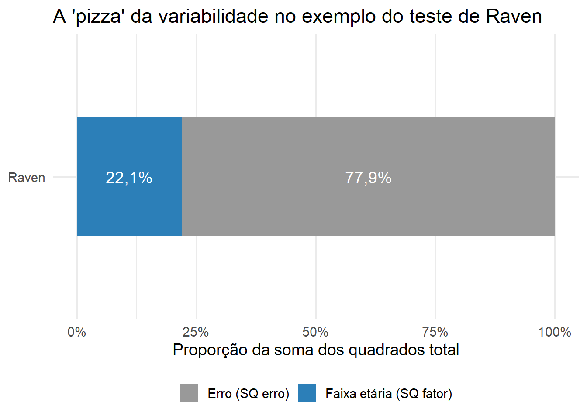
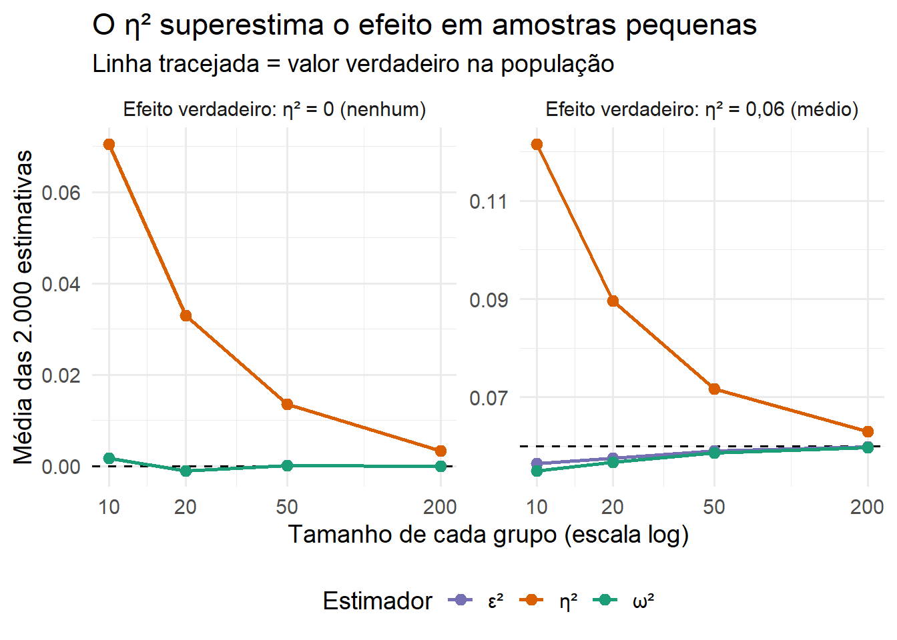
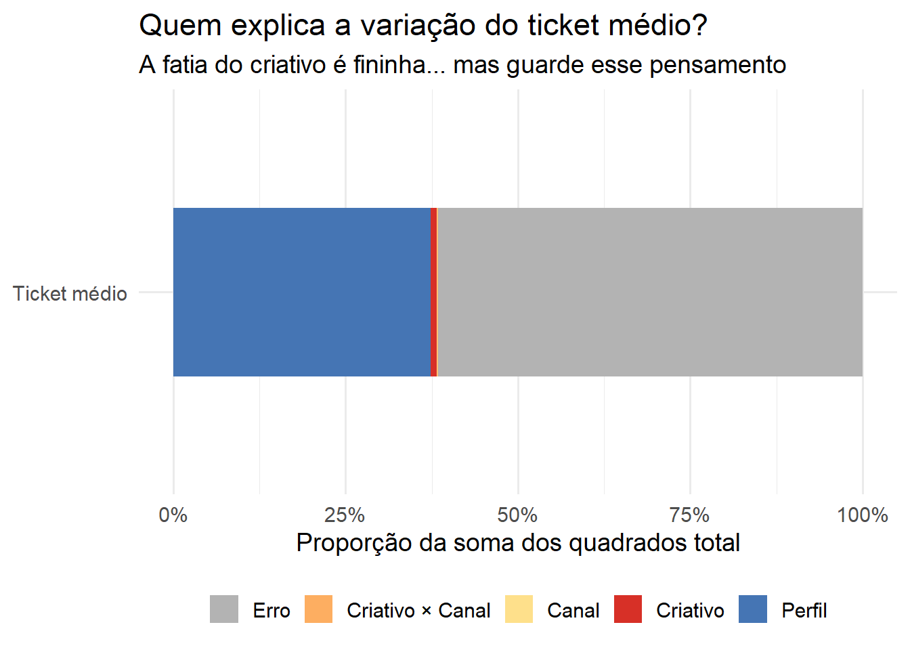

Eta, Ômega ou Épsilon? O Tamanho do Efeito Que Sua ANOVA Está Escondendo
r-code
tamanho do efeito
anova
eta-quadrado
marketing analytics
alfabetização de dados
data literacy
estatística
Author
Jobenil Júnior
Published
October 10, 2026
Você rodou a ANOVA, o software devolveu F = 44,7 e p < 0,001, e o revisor da revista escreveu na margem do seu artigo: “Report effect sizes.” Você volta para a saída e encontra lá um eta-quadrado parcial = 0,20. Aí vem a dúvida: isso quer dizer que o fator explica 20% da variação dos dados? (Spoiler: não necessariamente.) E por que o colega do laboratório ao lado reportou ômega-quadrado? E que história é essa de eta-quadrado generalizado? Hoje vamos abrir essa caixa-preta com fórmula, código em R e, no final, uma decisão de marketing de verdade, daquelas que valem dinheiro.
🔁 Recapitulando em 30 segundos: p não é tamanho
No post sobre Testes A/B vimos que o valor de p responde “foi sorte?”, enquanto o tamanho do efeito responde “quão grande?”. Dois grandes nomes da estatística resumiram isso em frases que gosto de mostrar em sala (Sullivan & Feinn, 2012):
“A significância estatística é a coisa menos interessante dos resultados.” (Gene V. Glass)
“O produto principal de uma pesquisa é uma ou mais medidas de tamanho do efeito, não valores de p.” (Jacob Cohen)
O valor de p depende do efeito e do tamanho da amostra. O tamanho do efeito não depende do N. Por isso ele é o resultado principal de um estudo.
Naquele post trabalhamos com dois grupos (versão A × versão B) e com o d de Cohen. Só que, na vida real, raramente temos só dois grupos. E quando entram em cena três campanhas, dois canais e dois perfis de cliente, a pergunta “quão grande?” muda de figura.
👨👩👧 As duas famílias de tamanho do efeito
Uma forma muito útil de organizar a bagunça vem do excelente artigo de Espírito-Santo & Daniel (2018), escrito em português e que recomendo a todos os meus leitores. Os tamanhos do efeito se dividem em duas famílias:
Família
Pergunta que responde
Exemplos
Onde aparece
d (diferença)
“Quantos desvios-padrão separam os grupos?”
d de Cohen, g de Hedges, Δ de Glass
Teste t, comparações par a par
r (variância explicada)
“Que fração da variação de Y é explicada por X?”
r, R², η², η²p, η²G, ω², ε², f
Correlação, regressão, ANOVA
A ANOVA fica num lugar curioso: ela pode ser lida como uma extensão da família d para mais de dois grupos (é o espírito do f de Cohen) ou como um membro da família r, em que medimos a proporção da variabilidade de Y atribuível a cada fator. Hoje vamos morar principalmente na família r.
🍕 Imagine assim: a pizza da variabilidade
Pense em toda a variação dos seus dados como uma pizza inteira. Essa pizza é a soma dos quadrados total (\(SQ_{total}\)): o quanto cada observação se afasta da média geral.
Na ANOVA de um fator, a pizza é dividida em duas partes:
\[SQ_{total} = SQ_{fator} + SQ_{erro}\]
\(SQ_{fator}\) (entre grupos): a fatia que o fator “comeu”, ou seja, a variação explicada pelas diferenças entre as médias dos grupos.
\(SQ_{erro}\) (dentro dos grupos): a sobra, a variação que o fator não explica.
Com dois fatores (A e B), a pizza ganha mais fatias:
E a estatística F, que você já conhece do post de ANOVA, é só a razão entre a variação média de cada fatia e a variação média da sobra: \(F = QM_{fator} / QM_{erro}\).
Vamos visualizar a pizza do exemplo do artigo de Espírito-Santo & Daniel (2018): o efeito da faixa etária (14–24, 25–64 e 65+ anos) sobre a pontuação no teste das Matrizes Progressivas de Raven, com N = 752 pessoas. Os autores publicaram a tabela da ANOVA, e é tudo de que precisamos:
library(dplyr)library(tidyr)library(purrr)library(ggplot2)library(effectsize)library(emmeans)library(pwr)# Função auxiliar para exibir números no padrão brasileiro (vírgula decimal)br <-function(x, digitos =2) {format(round(x, digitos), nsmall = digitos, decimal.mark =",", big.mark =".")}# Tabela 1 de Espírito-Santo & Daniel (2018): Raven ~ faixa etáriasq_fator <-18664.96sq_erro <-65867.25sq_total <- sq_fator + sq_errok <-3# número de gruposN <-752# tamanho da amostrapizza_raven <-tibble(fatia =factor(c("Faixa etária (SQ fator)", "Erro (SQ erro)"),levels =c("Erro (SQ erro)", "Faixa etária (SQ fator)")),sq =c(sq_fator, sq_erro)) |>mutate(prop = sq /sum(sq))ggplot(pizza_raven, aes(x ="Raven", y = prop, fill = fatia)) +geom_col(width =0.5) +geom_text(aes(label =paste0(br(100* prop, 1), "%")),position =position_stack(vjust =0.5), color ="white", size =5) +coord_flip() +scale_y_continuous(labels = scales::percent) +scale_fill_manual(values =c("grey60", "#2C7FB8")) +labs(x =NULL, y ="Proporção da soma dos quadrados total", fill =NULL,title ="A 'pizza' da variabilidade no exemplo do teste de Raven") +theme_minimal(base_size =14) +theme(legend.position ="bottom")

A faixa etária “come” cerca de 22,1% da pizza. Guarde esse número: ele é o nosso primeiro tamanho do efeito.
📏 O cardápio dos tamanhos do efeito na ANOVA
Aqui está o coração técnico do post. Cada medida responde a uma pergunta ligeiramente diferente sobre a mesma pizza.
η²: eta-quadrado
\[\eta^2 = \frac{SQ_{fator}}{SQ_{total}}\]
É a fração da pizza inteira que o fator explica. Na ANOVA de um fator, é exatamente o R² de uma regressão com o fator como preditor (Pearson o chamava de razão de correlação). Problema: o η² descreve a amostra, não a população, e por isso é enviesado para cima. Ele tende a “enxergar” efeito mesmo quando não há nenhum, como vamos provar daqui a pouco.
Uma versão muito útil para quem lê artigos que só reportam o F (o que é a regra, não a exceção):
\[\eta^2 = \frac{gl_{fator} \cdot F}{gl_{fator} \cdot F + gl_{erro}}\]
Proposto por Hays (1963), corrige o viés do η² e estima o efeito na população. Repare no termo \(gl_{fator} \cdot QM_{erro}\): é a parcela da fatia do fator que esperaríamos ver só por acaso, e que é descontada.
Primo do ω² (Kelley, 1935), é o “R² ajustado” da ANOVA. Fica sempre um pouquinho acima do ω², e estudos de simulação (Okada, 2013) mostram que ele é ainda menos enviesado. Detalhe: ω² e ε² podem dar negativos quando o efeito é praticamente nulo; nesse caso, reporta-se 0.
É o padrão do SPSS em ANOVAs fatoriais. Em vez de dividir pela pizza inteira, ele divide só pela fatia do fator mais a sobra, ignorando as fatias dos outros fatores. Na ANOVA de um fator, η²p = η². Com dois ou mais fatores, η²p ≥ η², sempre. Existe também a versão corrigida, o ω²p.
η²G: eta-quadrado generalizado
Proposto por Olejnik & Algina (2003), ele resolve o problema de comparabilidade do η²p. A ideia: no denominador, retira-se a variância dos fatores manipulados pelo pesquisador (campanha, tratamento, versão do site), mas mantém-se a variância dos fatores apenas medidos (perfil do cliente, sexo, região, faixa etária), porque essa variação “natural” existiria em qualquer estudo. Para um fator manipulado A num modelo com um fator medido O:
Se todos os fatores forem manipulados (e entre sujeitos), η²G = η²p.
f de Cohen
\[f = \sqrt{\frac{\eta^2}{1 - \eta^2}}\]
É a “moeda” do cálculo de poder e tamanho amostral para ANOVA. Também aparece como \(f^2 = \eta^2/(1-\eta^2)\), a mesma métrica usada na regressão múltipla.
A régua de Cohen
Os pontos de corte clássicos de Cohen (1988), que devem ser usados como guia e nunca como dogma:
Medida
Pequeno
Médio
Grande
η², η²p, ω², ε²
0,01
0,06
0,14
f
0,10
0,25
0,40
f²
0,02
0,15
0,35
Diga sempre qual eta você está reportando. “Eta-quadrado” sem sobrenome é uma pegadinha esperando para acontecer.
🧪 Reproduzindo o exemplo do artigo
Prova de fogo: será que conseguimos recalcular os números de Espírito-Santo & Daniel (2018) só com a tabela publicada?
# A tibble: 5 × 2
medida valor
<chr> <dbl>
1 F 106.
2 η² 0.221
3 ω² 0.218
4 ε² 0.219
5 f de Cohen 0.532
# Conferindo com o pacote effectsize, só a partir do F e dos graus de liberdadeF_to_eta2(F_raven, df = gl_fator, df_error = gl_erro, ci =NULL)
Eta2 (partial)
--------------
0.22
F_to_omega2(F_raven, df = gl_fator, df_error = gl_erro, ci =NULL)
Omega2 (partial)
----------------
0.22
F_to_epsilon2(F_raven, df = gl_fator, df_error = gl_erro, ci =NULL)
Epsilon2 (partial)
------------------
0.22
Batem com o artigo: η² = 0,2208, ω² = 0,2185 e ε² = 0,2187. Pela régua de Cohen, um efeito grande (acima de 0,14), confirmado pelo f de 0,53 (acima de 0,40). Os idosos realmente pontuam bem abaixo dos mais jovens nesse teste.
Repare também que, com N = 752, a diferença entre η², ω² e ε² aparece só na terceira casa decimal. Será que a correção então é perfumaria? Vamos ver o que acontece com amostras pequenas.
🎲 Por que corrigir? Simulando o viés do eta-quadrado
Vamos fazer um experimento de Monte Carlo. Criamos três grupos com um efeito verdadeiro conhecido (η² populacional = 0, ou seja, nenhum efeito, e η² populacional = 0,06, um efeito médio), variamos o tamanho de cada grupo (10, 20, 50 e 200) e repetimos cada cenário 2.000 vezes, calculando os três estimadores em cada repetição.
set.seed(2026)simula_vies <-function(n, eta2_pop, k =3, reps =2000) {# Médias dos grupos que geram o eta2 populacional desejado (DP dentro = 1) f <-sqrt(eta2_pop / (1- eta2_pop)) mus <- f *sqrt(k /2) *c(-1, 0, 1) g <-factor(rep(1:k, each = n))map_dfr(seq_len(reps), function(i) { y <-rnorm(n * k, mean =rep(mus, each = n)) medias <-tapply(y, g, mean) sq_tot <-sum((y -mean(y))^2) sq_fat <- n *sum((medias -mean(y))^2) qm_err <- (sq_tot - sq_fat) / (n * k - k)tibble(`η²`= sq_fat / sq_tot,`ω²`= (sq_fat - (k -1) * qm_err) / (sq_tot + qm_err),`ε²`= (sq_fat - (k -1) * qm_err) / sq_tot ) }) |>mutate(n = n, eta2_pop = eta2_pop)}vies <-expand_grid(n =c(10, 20, 50, 200), eta2_pop =c(0, 0.06)) |>pmap_dfr(simula_vies)resumo_vies <- vies |>pivot_longer(c(`η²`, `ω²`, `ε²`), names_to ="estimador", values_to ="valor") |>group_by(eta2_pop, n, estimador) |>summarise(media =mean(valor), .groups ="drop") |>mutate(cenario =ifelse(eta2_pop ==0,"Efeito verdadeiro: η² = 0 (nenhum)","Efeito verdadeiro: η² = 0,06 (médio)"))ggplot(resumo_vies, aes(x = n, y = media, color = estimador)) +geom_hline(aes(yintercept = eta2_pop), linetype ="dashed") +geom_line(linewidth =1) +geom_point(size =2.5) +facet_wrap(~ cenario, scales ="free_y") +scale_x_log10(breaks =c(10, 20, 50, 200)) +scale_color_manual(values =c("η²"="#D95F02", "ω²"="#1B9E77", "ε²"="#7570B3")) +labs(x ="Tamanho de cada grupo (escala log)",y ="Média das 2.000 estimativas",color ="Estimador",title ="O η² superestima o efeito em amostras pequenas",subtitle ="Linha tracejada = valor verdadeiro na população") +theme_minimal(base_size =14) +theme(legend.position ="bottom")

eta2_fantasma <- resumo_vies |>filter(eta2_pop ==0, n ==10, estimador =="η²") |>pull(media)
Olha que impressionante: com 10 pessoas por grupo e nenhum efeito real, o η² médio foi de 0,071. Pela régua de Cohen, isso é um efeito médio, um efeito fantasma! Não por acaso, esse valor é praticamente o que a teoria prevê para o viés do η² sob a hipótese nula, \((k-1)/(N-1) = 2/29 \approx 0{,}069\). Já o ω² e o ε² ficam colados no zero. À medida que a amostra cresce, os três convergem para o valor verdadeiro.
Com amostra pequena, o eta-quadrado enxerga efeito onde não existe. O ômega e o épsilon são os óculos de correção.
🧩 A pegadinha do eta-quadrado parcial
Três avisos que deveriam vir impressos na saída de todo software estatístico:
η²p não é “% da variância total explicada”. Cada η²p tem um denominador diferente (a fatia do seu fator mais a sobra). Por isso, se você somar os η²p de todos os efeitos de um modelo, o total pode passar até de 100%, o que não faz sentido como “fração da pizza”.
Não compare η²p de estudos com desenhos diferentes. Se um estudo incluiu um fator extra que “limpa” o erro (por exemplo, o perfil do cliente), o η²p dos demais fatores infla, mesmo que o efeito real seja idêntico. É aqui que entra o η²G.
Muita gente reporta “eta-quadrado” quando o software calculou o parcial. Confira sempre o rótulo da saída.
Vamos ver os itens 1 e 2 acontecendo ao vivo na aplicação de marketing.
📐 Intervalos de confiança: o tamanho do efeito também tem incerteza
Um tamanho do efeito é uma estimativa, e toda estimativa merece um intervalo de confiança. Espírito-Santo & Daniel (2018) são enfáticos nisso, e a APA também. No R, o pacote effectsize entrega o IC automaticamente, mas tem um detalhe técnico que pega muita gente de surpresa: por padrão, o IC dos etas é unilateral (alternative = "greater"), com o limite superior fixado em 1. A justificativa é que η² não pode ser negativo, então a pergunta natural é “o efeito é maior do que zero?”.
Se você preferir o IC bilateral, a convenção é usar 90%, e não 95%. O motivo: o teste F é intrinsecamente unilateral, e um IC bilateral de 90% para η² é o que fica coerente com um teste F a 5% (o limite inferior do IC exclui o zero exatamente quando p < 0,05). Vamos usar as duas versões a seguir.
🛒 Aplicação em marketing: criativo × canal × perfil do cliente
Agora vamos ao mundo real. Lembram das três campanhas do post de ANOVA, com Foco em Preço, Foco em Qualidade e Foco em Urgência? O e-commerce de cosméticos gostou tanto da análise que resolveu fazer um experimento maior:
Criativo (fator manipulado): Preço, Qualidade ou Urgência, sorteado para cada cliente;
Canal (fator manipulado): E-mail ou Instagram, também sorteado;
Perfil do cliente (fator medido, não manipulado): Novo ou Recorrente. Ninguém sorteia se o cliente é fiel; isso já vem “de fábrica”.
A variável resposta é o ticket médio (R$) de quem comprou. São 500 clientes em cada uma das 12 combinações, ou seja, 6.000 clientes num desenho balanceado.
Na simulação, o perfil do cliente tem um efeito enorme (o recorrente gasta, em média, R$ 70 a mais), o criativo tem um efeito modesto (até R$ 12), e o canal e a interação têm efeitos minúsculos. Vamos ver se a análise consegue contar essa história.
Tudo significativo! Criativo, perfil, canal (p < 0,001) e até a interação criativo × canal (p = 0,020). Se a análise parasse aqui, o relatório para a diretoria diria: “todos os fatores impactam o ticket médio”. Com 6.000 clientes, porém, é isso que acontece: quase tudo vira significativo. A pergunta que importa é outra: quanto cada fator importa?
Como o desenho é balanceado, a ordem dos fatores no modelo não altera as somas dos quadrados. Em desenhos desbalanceados, use car::Anova(modelo, type = 2) ou type = 3 e informe o tipo escolhido no relatório.
📐 Passo 2: o tamanho do efeito de cada fator
efeitos <-tibble(efeito =eta_squared(modelo, partial =FALSE, ci =NULL)$Parameter,`η²`=eta_squared(modelo, partial =FALSE, ci =NULL)$Eta2,`η²p`=eta_squared(modelo, partial =TRUE, ci =NULL)$Eta2_partial,`η²G`=eta_squared(modelo, generalized ="perfil", ci =NULL)$Eta2_generalized,`ω²p`=omega_squared(modelo, partial =TRUE, ci =NULL)$Omega2_partial,`f`=cohens_f(modelo, ci =NULL)$Cohens_f_partial)efeitos |>mutate(across(where(is.numeric), \(x) round(x, 4)))
Agora a história fica muito mais clara. Vamos por partes:
Perfil do cliente: η² ≈ 0,37, um efeito enorme. Sozinho, ele explica mais de um terço da variação do ticket. Mas atenção: ele não é uma alavanca de marketing. Não dá para “sortear” clientes fiéis.
Canal e interação: p < 0,05, mas η²p de 0,0028 e 0,0013. Bem abaixo até do “pequeno” de Cohen (0,01). Estatisticamente detectáveis, praticamente desprezíveis.
Criativo: aqui está a pegadinha do η²p. O η²p = 0,0139, mas o η²G = 0,0087. O parcial ficou 60% maior só porque o perfil do cliente, um fator medido, “limpou” uma parte enorme do erro do denominador. Se outra empresa repetir o mesmo experimento sem registrar o perfil, o η²p dela vai se parecer muito mais com o nosso η²G. É por isso que, para comparar com outros estudos, o η²G é o número certo.
E o aviso nº 1 da pegadinha: a soma dos η²p dá 0,395, maior do que o η² total explicado pelo modelo (0,384). Somar parciais não tem interpretação de “fatia da pizza”.
Vamos ver a pizza desse experimento:
pizza_mkt <-tibble(fatia =c(as.character(efeitos$efeito), "Erro"),sq =c(tab_anova$`Sum Sq`)) |>mutate(fatia =recode(fatia, criativo ="Criativo", canal ="Canal",perfil ="Perfil", `criativo:canal`="Criativo × Canal"),fatia =factor(fatia, levels =c("Erro", "Criativo × Canal", "Canal", "Criativo", "Perfil")),prop = sq /sum(sq) )ggplot(pizza_mkt, aes(x ="Ticket médio", y = prop, fill = fatia)) +geom_col(width =0.5) +coord_flip() +scale_y_continuous(labels = scales::percent) +scale_fill_manual(values =c("Erro"="grey70", "Criativo × Canal"="#FDAE61","Canal"="#FEE08B", "Criativo"="#D73027","Perfil"="#4575B4")) +labs(x =NULL, y ="Proporção da soma dos quadrados total", fill =NULL,title ="Quem explica a variação do ticket médio?",subtitle ="A fatia do criativo é fininha... mas guarde esse pensamento") +theme_minimal(base_size =14) +theme(legend.position ="bottom")

A fatia do criativo é menos de 1% da pizza. Pela régua de Cohen, usando o η²G, nem chega a “pequeno”. Hora de jogar fora o criativo de Qualidade? Calma. O artigo de Espírito-Santo & Daniel (2018) faz um alerta valioso: o tamanho do efeito omnibus da ANOVA raramente responde ao que se quer saber. Para decidir, precisamos voltar às comparações específicas e às unidades originais.
🔍 Passo 3: de volta à família d, nas comparações par a par
Agora sim, em reais por pedido, que é a língua do negócio:
O criativo de Qualidade gera, em média, R$ 12,39 a mais por pedido do que o de Preço (IC 95% com ajuste de Tukey: R$ 9,09 a R$ 15,70). Em unidades padronizadas, d ≈ 0,28, um efeito “pequeno” na régua de Cohen.
O Instagram gera R$ 4,75 a mais por pedido do que o E-mail (IC 95%: R$ 2,50 a R$ 7,01).
Essa é uma recomendação da própria APA, lembrada no artigo: reporte o efeito nas unidades originais (mais fácil de discutir no contexto do estudo) e na forma padronizada (para comparar com outros estudos).
💰 Passo 4: do efeito ao dinheiro
Vamos supor que a próxima campanha vai atingir 200.000 clientes, com uma taxa de compra de 5% (10.000 pedidos). Produzir um novo criativo de Qualidade custa R$ 30.000. Já migrar a campanha do E-mail para o Instagram exige mídia paga, a cerca de R$ 0,30 por cliente impactado. Usamos os limites do IC para montar um cenário pessimista e um otimista:
Olha que interessante: as duas diferenças são estatisticamente significativas, mas só uma paga a conta.
O criativo de Qualidade, aquele da fatia “fininha” da pizza, rende cerca de R$ 93.928 de lucro por disparo, e continua positivo mesmo no cenário pessimista.
A migração de canal, com p < 0,001, dá prejuízo no cenário provável. Só se pagaria no cenário mais otimista.
No marketing, o “pequeno” do Cohen foi calibrado com a psicologia dos anos 1960. O seu “pequeno” é medido em reais.
🧮 Passo 5: planejando a próxima rodada
Por fim, o tamanho do efeito serve para planejar o próximo experimento. Quantos clientes por criativo precisamos para detectar esse efeito com 80% de poder? E aqui mora um detalhe técnico sutil: qual eta usar no cálculo?
f_parcial <-sqrt(crit$`η²p`/ (1- crit$`η²p`))f_geral <-sqrt(crit$`η²G`/ (1- crit$`η²G`))n_parcial <-pwr.anova.test(k =3, f = f_parcial, sig.level =0.05, power =0.80)$nn_geral <-pwr.anova.test(k =3, f = f_geral, sig.level =0.05, power =0.80)$ntibble(base_do_calculo =c("f a partir do η²p (controlando o perfil)","f a partir do η²G (sem controlar o perfil)"),f =round(c(f_parcial, f_geral), 3),clientes_por_criativo =ceiling(c(n_parcial, n_geral)))
# A tibble: 2 × 3
base_do_calculo f clientes_por_criativo
<chr> <dbl> <dbl>
1 f a partir do η²p (controlando o perfil) 0.119 229
2 f a partir do η²G (sem controlar o perfil) 0.094 367
Se a próxima rodada também registrar e controlar o perfil do cliente, bastam cerca de 229 clientes por criativo. Se não controlar, precisaremos de uns 367. Usar o η²p de um estudo para planejar outro com desenho diferente é receita para um experimento subdimensionado.
Um último lembrete de Sullivan & Feinn (2012): o poder deve ser calculado antes do estudo. O chamado “poder post-hoc”, calculado com o efeito observado depois do fato, tem valor muito limitado, porque assume que o efeito da amostra é o efeito da população.
📝 Como reportar (modelo pronto para copiar)
Seguindo as recomendações de Espírito-Santo & Daniel (2018), um bom relato tem cinco ingredientes: descritivas (médias, DP e QM do erro), o efeito com IC, qual eta foi usado, a interpretação no contexto e as implicações práticas. Algo assim:
ic_crit <-eta_squared(modelo, partial =TRUE, ci =0.90, alternative ="two.sided") |>filter(Parameter =="criativo")
Houve efeito do criativo sobre o ticket médio, F(2, 5993) = 42,32, p < 0,001, η²p = 0,014, IC 90% [0,009; 0,019], η²G = 0,009 (perfil do cliente tratado como fator medido). Clientes expostos ao criativo Qualidade gastaram, em média, R$ 12,39 a mais por pedido do que os expostos ao criativo Preço (IC 95%: R$ 9,09 a R$ 15,70; d = 0,28).
E um checklist rápido:
O que reportar
Por quê
Médias, DP e QM do erro
Permite ao leitor recalcular outros tamanhos do efeito
F, graus de liberdade e p
O teste de significância continua tendo seu papel
Qual eta (η², η²p, η²G)
Evita a confusão mais comum da literatura
IC do tamanho do efeito
Mostra a incerteza da estimativa
ω² ou ε² quando N for pequeno
Corrige o viés para cima do η²
Efeito nas unidades originais
É a linguagem de quem vai tomar a decisão
Comparação com outros estudos da área
“Pequeno” e “grande” dependem do contexto
🎯 Em resumo:
Situação
Reportar
ANOVA de 1 fator, N grande
η² (praticamente igual ao ω²)
ANOVA de 1 fator, N pequeno
ω² ou ε²
ANOVA fatorial, comparando com estudos de mesmo desenho
η²p (e ω²p se N for pequeno)
Fatorial com fatores medidos (perfil, sexo, região), comparando entre estudos
η²G
Planejar o tamanho da amostra
f de Cohen, a partir do eta compatível com o próximo desenho
Decisão de negócio ou comparação entre 2 grupos
Diferença nas unidades originais + d / g de Hedges, com IC
Tamanho do efeito não é um número para enfeitar a tabela: é a resposta para a pergunta que o seu chefe (ou o revisor) realmente fez.
Da próxima vez que a saída do software mostrar um “eta-quadrado” solitário, você já sabe o roteiro: descobrir qual eta é, verificar se a amostra pede uma correção, colocar um intervalo de confiança do lado e, principalmente, traduzir o efeito para a unidade que importa para quem vai decidir. Testem esses códigos com os dados das suas próprias pesquisas e campanhas e mandem as dúvidas no nosso WhatsApp. Obrigado pela leitura!
Referências
Ben-Shachar, M. S., Lüdecke, D., & Makowski, D. (2020). effectsize: Estimation of Effect Size Indices and Standardized Parameters. Journal of Open Source Software, 5(56), 2815.
Cohen, J. (1988). Statistical Power Analysis for the Behavioral Sciences (2ª ed.). Lawrence Erlbaum.
Espírito-Santo, H., & Daniel, F. (2018). Calcular e apresentar tamanhos do efeito em trabalhos científicos (3): Guia para reportar os tamanhos do efeito para análises de regressão e ANOVAs. Revista Portuguesa de Investigação Comportamental e Social, 4(1), 43–60.
Lakens, D. (2013). Calculating and reporting effect sizes to facilitate cumulative science: a practical primer for t-tests and ANOVAs. Frontiers in Psychology, 4, 863.
Okada, K. (2013). Is omega squared less biased? A comparison of three major effect size indices in one-way ANOVA. Behaviormetrika, 40(2), 129–147.
Olejnik, S., & Algina, J. (2003). Generalized eta and omega squared statistics: measures of effect size for some common research designs. Psychological Methods, 8(4), 434–447.
Sullivan, G. M., & Feinn, R. (2012). Using Effect Size, or Why the P Value Is Not Enough. Journal of Graduate Medical Education, 4(3), 279–282.
EDA | TESTE T | ENQUETES | ANOVA | MODELOS DE REGRESSÃO | ANÁLISE FATORIAL | MODELAGEM DE EQUAÇÕES ESTRUTURAIS | TRI | RASCH MODELS | MACHINE LEARNING